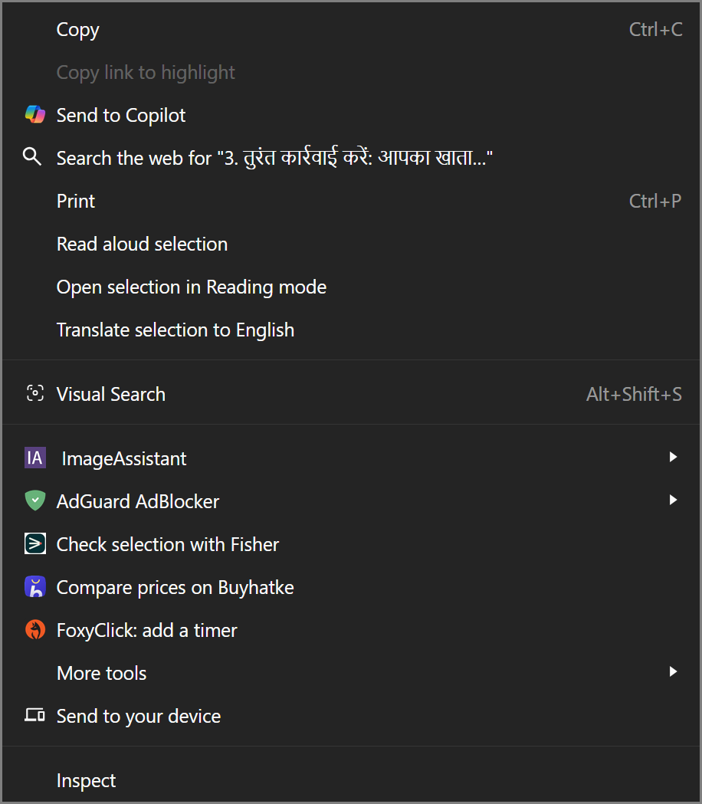
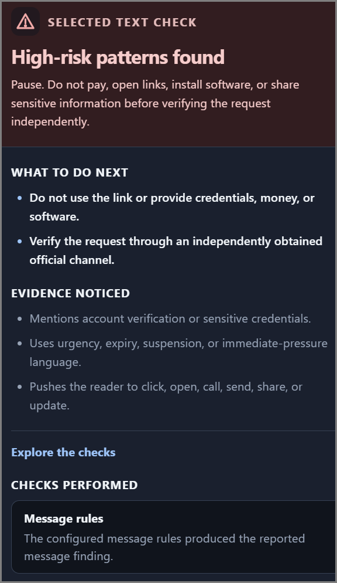
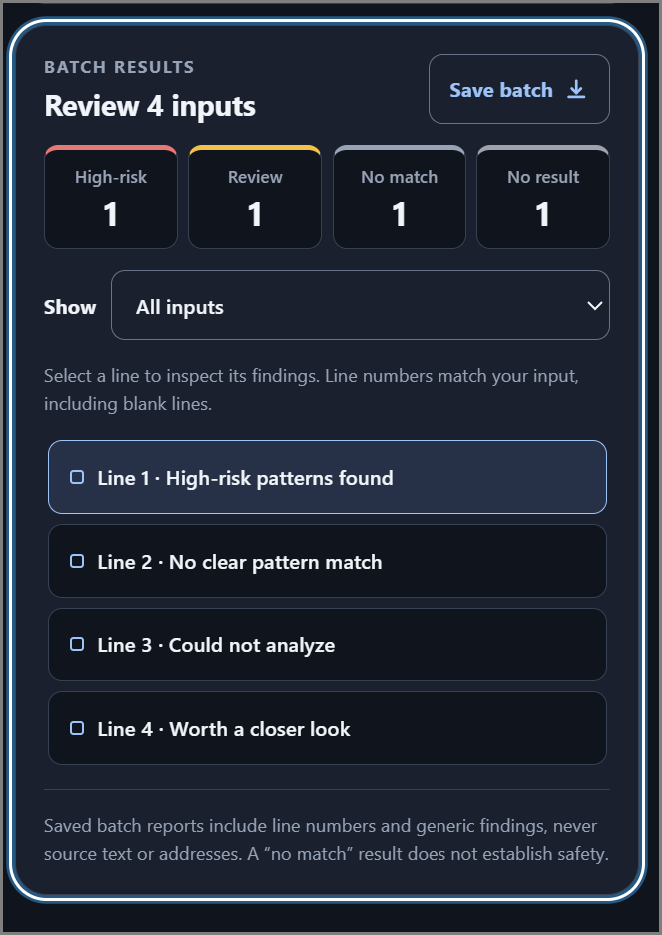

Stars will be added here.
Learnings will be added here.
Fisher
NLP project, J Component
Explainable, offline detection of scam and phishing messages in Indian languages
catching scams in Hinglish
- Team
- Rithik M (23MID0413)
Dinesh Raj N (23MIC0051) - Guide
- Prof. Sharmila Banu, SCOPE
- Course
- Natural Language Processing and Computational Linguistics
- Code
- GitHub repo
v0.6.0, Nov 2026
2Motivation
SMS, WhatsApp and e-mail are now the main way financial scams reach people in India. A typical message asks the reader to update KYC, share an OTP, click a link or call a number, usually by threatening to block an account.
- Scams are multilingualThe same OTP or KYC scam arrives in English, Hindi, Tamil and Telugu, often mixed in one message, while most filters and datasets are English-only.
- Romanized spelling is not standard“jaldi” may stand for जल्दी or जलदि. A keyword list written for one spelling misses the others.
- Users need reasonsA bare score does not teach the reader what to look for. Fisher names the pressure, credential, impersonation, money and link cues it found.
- PrivacyMessages with account details should not be uploaded to a server to be checked, so Fisher runs offline and keeps no history.
- Regex is under-ratedMany scam cues are lexical and structural. They can be matched cheaply, transparently and without training data. The project tests how far that goes on multilingual text.
2What a scam message looks like
The same scam, written three ways, and a bank's real warning that must not be flagged. Highlighted words are the cues Fisher matches.
Hinglish, Romanized Hindi
Aapka khata band ho jayega, turant OTP bhejo
urgency + credential + action: high risk
Hindi, Devanagari
तुरंत अपना OTP भेजें वरना खाता बंद हो जाएगा
same scam, native script: high risk
English, a bank's own warning
SBI will never ask for your OTP. Do not share it with anyone.
protective wording, so never high
3The gap and the event behind it
The event
The Reserve Bank of India has repeatedly warned the public about one pattern: a call or message that threatens to block an account for “non-updation of KYC” and asks the reader to click a link. Its BE(A)WARE booklet lists phishing links, vishing calls, UPI collect requests, lottery frauds, QR-code scams and fake loan apps as common modus operandi, and advises never to share a password, PIN or OTP, not even with bank officials [10], [11].
The gaps in existing work
- Romanized ambiguityDetectors and models pick one spelling or one transliteration, so scam cues in Romanized Indic text are missed. Fisher generates several transliteration candidates and aggregates them.
- Black-box, cloud toolsMost detectors send the message to a server and return a score without reasons. Fisher runs locally and explains every signal.
- No multilingual scam benchmarkThere is no labelled, stratified set of scam and benign messages across Indian languages and scripts. Fisher builds the format, validators and metrics such a set needs.
3Related work and where it falls short
| Work | What it offers | Limitation for Indian scam detection |
|---|---|---|
| Almeida et al. 2011, SMS Spam Collection [1] | 5,574 labelled English SMS | English only, no code-mixed text |
| Sahingoz et al. 2019 [2] | Phishing detection from URL features | Ignores the social-engineering text |
| IndicNLPSuite 2020 [3] | Corpora and models for Indian languages | Native-script focus, needs task data |
| MuRIL 2021 [4] | BERT for Indian languages incl. transliterated text | Heavy on-device, hard to explain |
| Aksharantar / IndicXlit 2023 [5] | Neural transliteration for 21 languages | Top-1 use discards plausible alternatives |
| DravidianCodeMix 2022 [6] | Code-mixed Tamil, Malayalam, Kannada | Sentiment and offence, not scams |
| Dakshina 2020 [7] | Native and Latin text, romanisation lexicons | General text, not scam messages |
| Unicode TS #39 [9] | Confusable (lookalike) characters | Character level, no language or intent |
| RBI BE(A)WARE [10] | Authoritative list of fraud modus operandi | Awareness material, not a detector |
4Architecture
A product (browser extension and CLI in plain JavaScript, no runtime packages) and a research pipeline in Python share one engine, so what the pipeline measures is what users see.
User inputs
Surfaces (Manifest V3, no network)
popup.html / popup.jsUI, rendering, reports
background.jscontext menu, ~30 s hand-off
fisher.mjsanalyze, batch, batch-detail
Shared analysis engine (JavaScript, offline)
analyzer.mjsreport builder
detector.mjsnormalise, rules, decision
links.mjsURL structure checks
Result report: risk level, reasons, next steps. Popup, CLI, or JSON saved without the text or links.
4Research pipeline and design decisions
Research pipeline
Public datasets go through the eval/ loader and importers. translit_experiment.py and translit_accuracy.py combine them with the fisher_transliteration candidate generator, call the product only through node fisher.mjs batch-detail, and write metrics, error lists and McNemar tests to eval/results/*.json.
Design decisions
- Offline by constructionContent-security policy
default-src 'none'; connect-src 'none'. One permission,contextMenus. No host permissions, content scripts or storage. - One shared enginePopup and CLI import the same modules, so there is one behaviour to test.
- Pure, bounded functions20,000 code points per message, 2,048 per link, 32 link candidates, 100 bulk lines in the browser and 500 in the CLI, 1 MiB files.
- Reports without contentSaved reports hold findings, counts and line numbers, never the submitted text.
- Product and research apartPython calls the product only through the CLI, which prints one JSON result per line and never echoes the input.
5Tech stack
- Engine and extension
- JavaScript ES modules, Node.js 22, Chrome/Edge Manifest V3. No runtime packages.
- Research pipeline
- Python 3.11 with uv; numpy, pandas, scikit-learn, openpyxl.
- NLP techniques
- Regular expressions, Unicode NFKC normalisation, confusable-character profile, rule-based transliteration with beam search.
- Baselines
- Character TF-IDF with logistic regression; word and character TF-IDF with linear SVM; grouped nested cross-validation.
- Statistics
- Precision, recall, F1, false-positive rate; exact McNemar tests.
- Testing
- node:test, pytest, Playwright 1.63, axe-core 4.13 for accessibility.
- CI and tooling
- Git, GitHub Actions, Docker for Linux runs, a written decision log.
- Coding assistance
- Claude Code and Google Antigravity. Every change was run against the automated tests.
- This website
- Hand-written HTML and CSS with a short script for tabs and page flips. Averia Serif Libre, Inter, Gochi Hand and Kalam from Google Fonts.
- Cost
- No licence or cloud cost. All tools are free or open source.
6Datasets used
| Dataset | Language / script | Label | Size used | Role |
|---|---|---|---|---|
| UCI SMS Spam Collection [1], [13] | English | spam / ham | 200 + 200 | Spam recall and false positives |
| Dakshina romanized sentences [7] | Hindi, Tamil, Telugu in Latin script | benign | 150 per language | False positives on Romanized text |
| Dakshina romanisation lexicons [7] | Hindi, Tamil, Telugu | word pairs | 2,000 per language | Transliteration accuracy |
| Synthetic template | English, Hindi, Tamil, Telugu | scam / benign | 8 | Pipeline and format checks |
| Dravidian SMS ham/spam [14] | Tamil, Telugu, English | ham / spam | not in reported figures | Auxiliary TF-IDF baselines |
Planned evaluation set
4 languages × 2 labels × 30 messages = 240, mixing native-script and Romanized items. It has not been collected yet: no authentic labelled phishing corpus exists for these languages, and real messages need consent and de-identification, for which the project built validators.
Raw public data stays out of version control; only derived metrics are committed. UCI is promotional spam and Dakshina is formal Wikipedia text, so neither measures real Indian-language phishing.
6Evaluation record format
Every evaluation item is one JSONL record. The loader rejects duplicates and invalid fields.
| Field | Allowed values |
|---|---|
id | Unique string, e.g. hi-001 |
text | Message text. Duplicates after lower-casing and whitespace collapsing are rejected. |
label | scam or benign |
language | english, hindi, tamil, telugu |
script | native, romanized, latin_english (exactly when the language is English) |
source | synthetic, consented or public:<name>; public text is never labelled synthetic |
{"id": "hi-001", "text": "...", "label": "scam", "language": "hindi", "script": "romanized", "source": "synthetic"}
7Prompts used to build this website
Built with Claude Code (Claude Opus 5.5) using the karpathy-guidelines, frontend-design and replica-skill plugins. Prompt 1, verbatim:
andrej-karpathy-skills karpathy-guidelines design frontend-design The project is located at the repository m-rithik Phishing-in-indian-language. Reference report and ppt are attached. As part of Project Writeup: 1. Title 2. Motivation 3. Existing Gap or Event that motivated your project 4. Architecture 5. Complete Techstack info 6. Datasets used 7. List all the Prompts used for the construction of the website, if applicable 8. NLP pipeline 9. Elaborate on Users, Inputs with types and formats, and Output 10. References Make a website having three tabs: * Stars * Project * Learnings Right now only put project data. Design aesthetic should follow a clean, natural, high-craft layout focused on clarity, featuring structured typography, horizontal alignment, and visual pacing similar to jackiezhang.co.za. Use the following plugin setup: plugin marketplace add Jakeschincariol replica-skill plugin install replica-skill replica-skill Push the finalized code to the repository m-rithik NLP-Portfolio. ask if you have doubts
7Prompts, continued
Prompt 2
use the plugins
Prompt 3
localhost it once
Prompt 4
its rithik M can you make it like flip book on every scroll see the reference site properly what are you doing
8NLP pipeline
The detector is a deterministic rule-based classifier with no learned parameters, so every result traces to named rules. An invalid input stops at step 1 with “could not analyze”, never a partial result.
- ValidateLength, control characters, malformed Unicode.
- NormaliseNFKC, strip invisible characters, lowercase, undo “[.]” and “hxxp”.
- Extract linksParse URL structure, never open it, then mask link text.
- Match signalsWeighted regex groups in four languages plus Romanized forms.
- Check contextNegation, protective wording, lookalike letters.
- DecideRisk level with reasons and next steps.
Decision
- HighA non-negated sensitive request with a link or urgency; an impersonated authority with a link and a credential, urgency or money cue; a lure with a link or phone number; or an authority with a phone number and urgency.
- ReviewTotal score of 3 or more, a lookalike sensitive term, or incomplete link inspection.
- No matchNone of the above. This is never described as safe.
8Signal groups
| Group | Weight | Example cues |
|---|---|---|
| credential | 3 | OTP, PIN, password, CVV, KYC; ओटीपी, पासवर्ड; ஓடிபி; ఓటీపీ |
| link | 3 | http, www, bare domains, defanged forms |
| urgency | 2 | urgent, blocked; तुरंत; உடனே; వెంటనే; jaldi, turant, udane, ventane |
| action | 2 | click, verify, update, call, send; क्लिक, भेजें; bhejo |
| impersonation | 2 | bank, SBI, RBI, police, customs, courier; बैंक; வங்கி; బ్యాంక్ |
| money | 2 | refund, prize, loan, rupees; इनाम; பரிசு; బహుమతి |
| lure | 2 | lottery, jackpot, KBC, PAN-card warnings |
const risk = highRiskCombination ? "high" : (linkLimited || hasConfusableSensitiveTerm || score >= 3) ? "review" : "no_match";
8Transliteration of Romanized words
Indic scripts attach vowels to consonants as matras and suppress the inherent vowel with a virama, so letters cannot be mapped one by one. The generator tokenises the word, composes syllables, explores ambiguous choices with a beam search of width 16, and normalises candidate probabilities to sum to 1. The detector then checks the original text plus the candidate variants.
Alternatives such as जलदी and जल्दि stay in the candidate list.
Top candidates for scam words
| Romanized | Language | Top candidate | Confidence |
|---|---|---|---|
| turant | Hindi | तुरंत | 0.79 |
| udane | Tamil | உடனே | 0.67 |
| ventane | Telugu | వెంటనే | 0.75 |
9Users and inputs
- Message recipientsAnyone who gets an SMS, WhatsApp or e-mail in English, Hindi, Tamil or Telugu and wants to check it before acting. They use the browser extension.
- Researchers and evaluatorsPeople measuring the detector or the transliteration study. They use the CLI and the Python pipeline.
Inputs
| Input | Type and format | Limit |
|---|---|---|
| Pasted message | Unicode string; Latin, Devanagari, Tamil or Telugu, mixed allowed | 20,000 code points |
| Single link | URL string, inspected by structure only | 2,048 code points |
| Bulk check | Plain text, one message per line, or a .txt file | 100 lines in the browser, 500 in the CLI, 1 MiB file |
| Selected text | Text chosen via “Check selection with Fisher” | 20,000 code points, held ~30 s |
| CLI | stdin with --mode message|url, --format text|json | Same as above |
| Evaluation data | JSONL records: id, text, label, language, script, source | Validated by the loader |
9Output
One of four results, each with reasons, the checks performed and next steps: high-risk patterns found, worth a closer look, no clear pattern match or could not analyze. The JSON report never contains the matched text.
$ echo "Aapka khata band ho jayega, turant OTP bhejo" | node fisher.mjs analyze --format json
{
"engineVersion": "0.6.0",
"mode": "message",
"risk": "high",
"reasons": [
"Mentions account verification or sensitive credentials.",
"Uses urgency, expiry, suspension, or immediate-pressure language.",
"Pushes the reader to click, open, call, send, share, or update."
],
"nextSteps": [
"Do not use the link or provide credentials, money, or software.",
"Verify the request through an independently obtained official channel."
],
"linkSummary": { "inspected": 0, "flagged": 0, "limited": false },
"checks": [{ "id": "message_rules", "label": "Message rules", "detail": "..." }]
}
batch-detail prints one JSON line per input line and exits with code 1 if any line could not be analyzed.
9What the user sees



10References
- [1]T. A. Almeida, J. M. G. Hidalgo and A. Yamakami, “Contributions to the study of SMS spam filtering: new collection and results,” Proc. ACM DocEng, 2011.
- [2]O. K. Sahingoz, E. Buber, O. Demir and B. Diri, “Machine learning based phishing detection from URLs,” Expert Systems with Applications, vol. 117, pp. 345–357, 2019.
- [3]D. Kakwani et al., “IndicNLPSuite: Monolingual corpora, evaluation benchmarks and pre-trained multilingual language models for Indian languages,” Findings of EMNLP, 2020.
- [4]S. Khanuja et al., “MuRIL: Multilingual Representations for Indian Languages,” arXiv:2103.10730, 2021.
- [5]Y. Madhani et al., “Aksharantar: Open Indic-language transliteration datasets and models for the next billion users,” Findings of EMNLP, 2023.
- [6]B. R. Chakravarthi et al., “DravidianCodeMix: Sentiment analysis and offensive language identification dataset for Dravidian languages in code-mixed text,” Language Resources and Evaluation, vol. 56, 2022.
- [7]B. Roark et al., “Processing South Asian languages written in the Latin script: the Dakshina dataset,” Proc. LREC, 2020.
- [8]Y. Madhani et al., “Bhasha-Abhijnaanam: Native-script and romanized language identification for 22 Indic languages,” Proc. ACL, 2023.
- [9]Unicode Consortium, “Unicode Technical Standard #39: Unicode Security Mechanisms.”
- [10]Reserve Bank of India, “BE(A)WARE: Booklet on modus operandi of fraudulent transactions and precautions to be taken,” March 2022.
- [11]Reserve Bank of India, press release “Consumer Awareness – Cyber Threats and Frauds,” 28 January 2022.
- [12]Q. McNemar, “Note on the sampling error of the difference between correlated proportions or percentages,” Psychometrika, vol. 12, no. 2, pp. 153–157, 1947.
- [13]UCI Machine Learning Repository, “SMS Spam Collection.”
- [14]IEEE DataPort, Dravidian-language SMS spam/ham dataset.